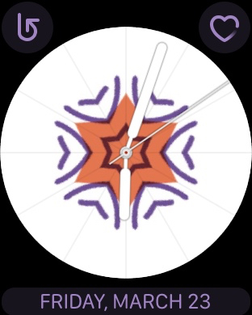

May 2018
iOS & Apple news
Today, Apple announced 2Q results. The iPhone X remains the most popular model (unlike rumors from analysts before today’s announcements from Apple). `We’re thrilled to report our best March quarter ever, with strong revenue growth in iPhone, Services and Wearables,’ said Tim Cook, Apple’s CEO. `Customers chose iPhone X more than any other iPhone each week in the March quarter, just as they did following its launch in the December quarter. We also grew revenue in all of our geographic segments, with over 20% growth in Greater China and Japan.`
Here is a summary of today's announcements by Tim Cook.
Here is Apple's revenue breakdown by quarter, reported by Macrumors.
iOS 11 has a high adoption rate, it is on 76% of all active devices, reports iDownloadblog. `To put that in some context, Android 8.0 Oreo, the latest and greatest version of Google’s mobile operating system, is installed on 4.6% of devices and the vast majority is on a version that is at least 3 years behind the latest.
iPhone X owners: a survey shows 97% satisfaction, and 85% are very satisfied. The results are impressive except opinions about Siri.

Review of iPhone 8, by iMore, including the new (PRODUCT)RED, saying it' a better version of what you are already familiar with.
The new 9.7’ iPad (non-pro model) has been out about a month now. See iMore's review , calling the use of Apple Pencil a gamechanger.
Police agents can allegedly crack iPhones protected with passcodes up to 6 numbers. Undoubtedly, Apple is working to improve the security, and undoubtedly, most thieves do not have access to police methods. However, if you are concerned about this, in the meantime, you can increase the length of your passcode. To change your password in iOS: Settings > Face ID & Passcodes > Change Passcode > Passcode Options: Custom Alphanumeric Code.
RIP: Apple Airport base stations will no longer be produced, reports iMore. `AirPort Express, AirPort Extreme, and AirPort Time Capsule will continue to be sold while supplies last.'
A complete teardown of the HomePod, by E&T.
Apple has let a fleet of mapping vehicles scour the US and 10 other countries to collect street views. Hopefully we will see the results reflected in Maps soon.
iOS apps & widgets
Now that Apple Pencil is supported on the new `regular’ iPad, in addition to the Pro iPadline, it’s worth looking at apps that can benefit from it. Not just for drawing. The best Apple Pencil apps that aren't for drawing, listed by Cult of Mac.
Linea is a drawing app for iPads (not for iPhone). It has gotten rave reviews. It's my new favorite drawing app, writes Serenity Caldwell for iMore. It is excellent for writing, sketching, and idea-building, she writes. A very nice feature is that you can write with the Apple Pencil and erase with yoru finger.Here is a look:
Workouts++ is a free app that lets you see your workout data that is in your iPhone and/or Apple Watch. The app provides new ways to view your existing workout data. It's a very nice app and it gives you more information than the native apps. It also comes with an optional Watch companion app.
Bear 1.5 is out with many new features, including: ePub export, customizable TagCons, new themes, new export options, and more.
Bear offers a version of the app for Apple Watch. You can create new notes or append to existing notes on your Watch by dictation, you can check off ToDo's on your Watch.
The new leading ad blocking app has been released, 1Blocker X. It is the follow-on to 1Blocker which was already an excellent app. (The best ad blocker for iPhone and iPad is 1Blocker, wrote Lifehacker, last year. Note that 1Blocker is available for the Mac as well.) Olga points out that this is a paid app and this is a good thing: free ad blockers are usually making money by ads or giving info to advertisers (yes, sadly it's true).
ProtonMail is an email service that provides secure, encrypted communications that protect your privacy. Proton email app for iOS works on iPhones and iPads. The email service is strong on security but easy to use. Read more details about it.
tips & tricks
Did you accidentally delete calendars, or contacts, or reminders, or bookmarks? You can restore them from iCloud. This is a great tip. And it shows yet another reason why you should use iCloud.
Does it seem that your contacts are not syncing via iCloud? It might be because some of them are not on iCloud. Perhaps you have some on a Google account or on your devices. Here are two tips on getting everything to sync well: move them to iCloud.
How to import your Google Contacts into your iCloud account. Note: you may be better off having all your Contacts listed in your iCloud account (for simplicity, or to know where your data is, or for privacy, or all of the above). Also note that after you do this, you will need to turn off Google sync with Google contacts.
How to move your Contacts from `on my iPhone' to iCloud. Another good tip, especially if you use more than one device and want to sync your contacts across all devices.
Two Tips for autocorrect on a Mac:
If you are tired of autocorrect on your Mac in general, you can go to Mac System Preferences > Language & Region > Keyboard Preferences > Text and deselect Correct spelling automatically.
If you want to leave autocorrect On for most applications on your Mac, but want to turn it off for a specific application, the steps you need to take depend on the application. For example, if you are using Apple Notes, or Bear, or Evernote to take notes, go to Edit > Spelling and Grammar, and deselect Correct Spelling Automatically.
How to change your email address associated with your Apple ID, writes iMore.
How to reduce your cellphone addiction, tips from the NY Times.
Confused about multiple ID's you have for getting iMessages? Most people have at least a couple. You can receive texts at all your addresses, and here is How to pick a reply address in iOS and macOS.
Some apps offer subscription-based access to their services or content. Here is how to view, change or cancel your subscriptions.
gadgets & accessories
An innovative iPhone dock is lives up to its claim of best iPhone dock, writes 9to5Mac in its review. Take a look:
iMore lists The best WiFi routers in 2018.
Amplifi is a mesh WiFi system for the home. It claims to be easy to set up, powerful, and comes with an iOS app for management.
iMore reports on the best Apple TV gaming controllers.
The EarBuddyz are small add-ons to your AirPods or Earpods to make them stay in your ear securely. Olga bought the EarBuddyz from Amazon. If you are part of the 90% of people with typical ears, Apple’s AirPods stay put and do not give you any trouble. However, about 10% of the population needs some extra help. These little gadgets are designed to solve this.
This Apple Pencil case sleeve is used by many artists and illustrators who need to use the pencil for long periods of time. It also protects the pencil and its cap.
TechHive looks at the best smart bulbs for your home. It’s worth remembering that Apple HomeKit provides a standard of security and privacy for smart devices and any review should include this aspect.
Here are smart light bulbs that support HomeKit.
Canary security camera adds simpler recording controls and configurale Away mode.
For those who have a new Macbook Pro with only USB-c ports, Satechi has launched a USB-c hub, writes Macrumors.
Pay
Apple Pay has added over 20 more banks across the uS, reports 9to5mac. It already works with nearly every major financial institution in the US, but there are minor and regional credit unions and banks being added.
Apple pay will soon be available in Brazil. It is expanding within Italy, Spain, Canada, China.
Merchants together with Apple frequently offer in-app Apple Pay discounts. Look for these in apps you already use or stores you visit.
Apple pay participating banks in Europe and ME. The list is expanding.
watch
Code found in watchOS 4.3.1 suggests future support for 3rd party watch faces, reports 9to5mac.
Apple releasednew Apple Watch bands for spring.
An IT manager from Arizona lost 105 pounds thanks to his Apple Watch.
Olga tested how the Watch creates a kaleidoscope watch face when it is provided a user’s photo or image. Here is one example.
Using this seed image (a sketch done on her iPhone):
The watch creates this kaleidoscope watch face (shown in various snapshots):

Note that as you rotate the digital crown, the kaleidoscope goes through the entire seed image (eventually getting to the green parts, not only the orange parts shown above). Olga’s recommendation is to use a seed image whose colors you like, make sure colors have pleasing contrasts, and preferably use images that do not have a lot of white, as the watch face always maintains white clock dials, unlike the complications whose colors change as the kaleidoscope rotates.
privacy, security, net neutrality
MyFitnessPal had a massive security breach and properly notified customers. This is an exercise-and-diet app that requires log-in credentials. A lesson worth repeating: Never, never reuse passwords. This is an example of a breach that was not part of the business model (unlike Facebook), but hackers got in. To protect yourself, do not reuse passwords across sites or services.
Any company using Facebook for User ID is Foolish, reports John Gruber. This is based on today's announcements (May 1, 2018) and is unrelated to last months Facebook meltdown on privacy.
Apple and IBM call for call for more data oversight after Facebook privacy breach, reports Reuters.
Apple's Tim Cook says says Facebook should have regulated itself, but it's too late for that now. In an interview with Re/Code, Cook said, `The truth is, we could make a ton of money if we monetized our customer -- if our customer was our product. We’ve elected not to do that.'When asked: What would he do if he were Facebook CEO Mark Zuckerberg? His answer: `I wouldn't be in this situation.'
A reporter writes: I downloaded All my Facebook Data, Here's What I Learned. `After 11 years my account was a mausoleum of old photos. But requesting my archive proved a wakeup call about what other intel the company had on me’.
Playboy deletes their Facebook account, reports The Verge. `The #DeleteFacebook movement is now in full... swing'
Want to delete Facebook? It takes a couple of weeks to go through and some vestiges remain forever. Best to download all your profile data first, then delete your account. You will be warned that this will happen after several days. Your log-in info remains, and some other data.
Here is an overview of how to delete Facebook.
If you care about privacy, delete Facebook, Instagram, and WhatsApp. Avoid using these apps and use blockers to block the share buttons corresponding to any of these apps on any websites.
Facebook, the meltdown
This past month, Facebook’s `perfect storm’ became public. Though it seems FB itself has known about this since 2015. Supposedly ‘87’ Millions users' personal data and profile descriptions were given and taken by political consultants and used for political campaigns. Users were micro-targeted with political `ads’ (i.e., shown false facts as a way to manipulate opinions). The '87’ million claim is a low number, as FB has admitted all 2 Billion their users are exposed to this type of targeting.
Some reports refer to what has happened as a `data breach’. This is not accurate. Facebook enabled a breach of trust and an abuse that it set up and enabled with full awareness, despite warnings. Facebook did not have a security failure. What happened is consistent with FB’s business model: they collect a mountain of personal data from users, create detailed profiles based on user activity, and sell the info for profit to advertisers and other businesses. Many of these businesses create their own Facebook `apps’ that automatically collect the user’s personal data plus Facebook’s profile info, depending on each app.
In this case, Facebook provided an app all the data they had legitimately paid for. The app also collected data from the friends of the users. (While this stretched the agreement that FB made with the app’s developers, this was easily enabled by Facebook’s own structures and business model.) When Facebook learned about this (a couple of years ago), they merely sent a form to the developers asking them to confirm they deleted the extra data. Facebook did not ensure the data was ever deleted. The whole incident was kept quiet.
Now that the scandal is public, Facebook ousted the whistleblower (who was a simple FB user). However, Facebook continues to employ one of the two researchers who was responsible for the Cambridge Analytica scandal.
The FTC confirms open Facebook probe after controversial data practices.
Facebook hearings in Congress
Here are 2 short videos worth watching from Congress questioning Mark Zuckerberg. Here is Rep. Kathy Castor (D-Florida) asking about Facebook data practices and evasive descriptions, saying `Americans do not like being manipulated’. Watch the brief c-span video.
Here is Rep. Leonard Lance (R-New Jersey), where he asks and states his view that Facebook violated the agreement with the FTC (Federal Trade Commission). Watch the brief c-span video..
Facebook is lying about your data, says The Verge. `While the CEO repeatedly stated that users have control over how their data is shared, there’s a good chance you have a Shadow Profile even if you’ve never joined the social media platform’ The Verge reports. Watch this brief overview:
Fact-Checking Zuckerberg's testimony about FB privacy, reports the Guardian. Five claims do not stand up.
A way to rein in data collection without going through Congress, reports The Verge.
general news and crossover
T-Mobile and Sprint will be merging soon, reports Reuters.
Amazon knows why Alexa was laughing at its customers, reports the NY Times.
general apps & services
Pixelist lets you order custom paintings based on your photos. They primarily work off of an Instagram photo of your choice, but you can send them any favorite photo.
Giphy lets you find animated GIFs. Search to your heart's content.
If you are looking for wallpapers for any of your devices, you can spend an afternoon looking through Climaxstudios. Do a search for images or categories.
For cloud backups, Backblaze is used by many.